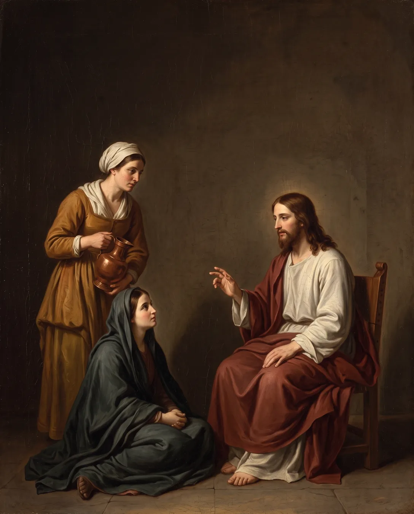
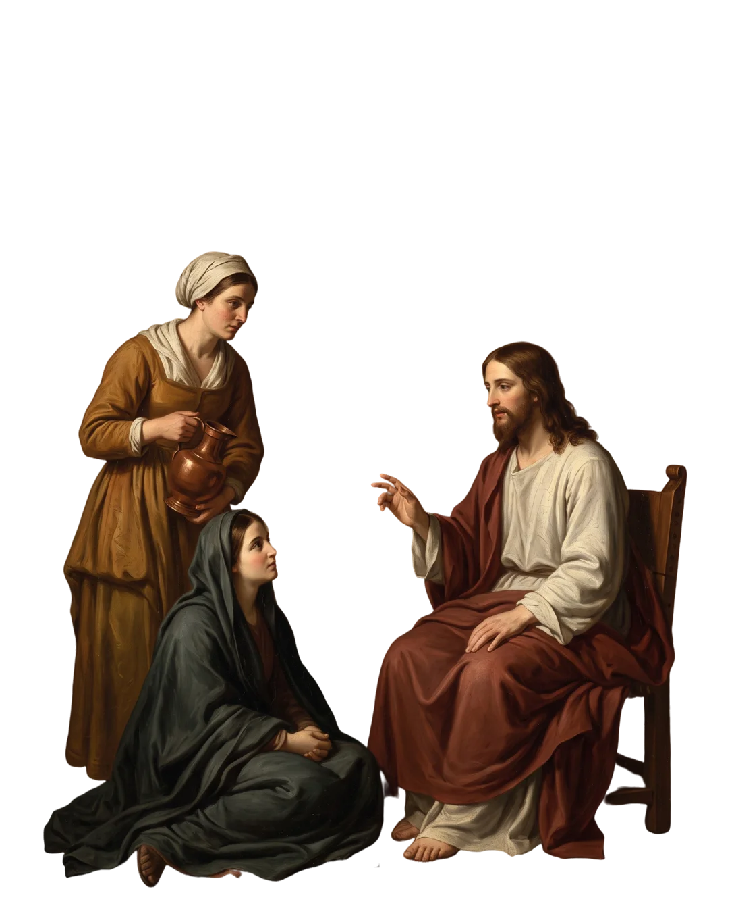
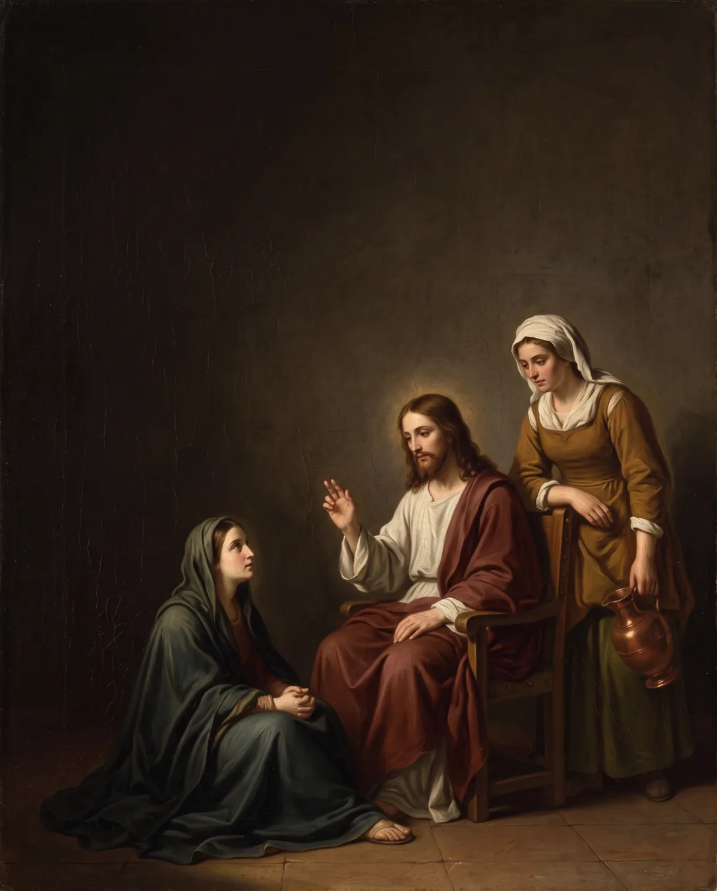
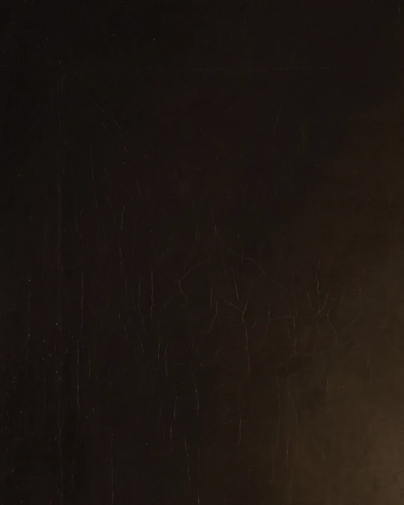

Muita coisa pra fazer,
pouco tempo pra
rezar?
O que Jesus disse a Marta.

Uma só coisa é necessária
Marta corria para servir. Maria parou para ouvir. Jesus não condenou o trabalho: lembrou o que vem primeiro (Lc 10,41-42).
A oração é a elevação da alma a Deus. (Catecismo, 2559)
Antes da agenda,
a oração.

Cinco minutos com Deus
mudam o dia.
Entra no teu quarto e reza ao Pai (Mt 6,6).
Quer mais conteúdos assim?
Me segue.